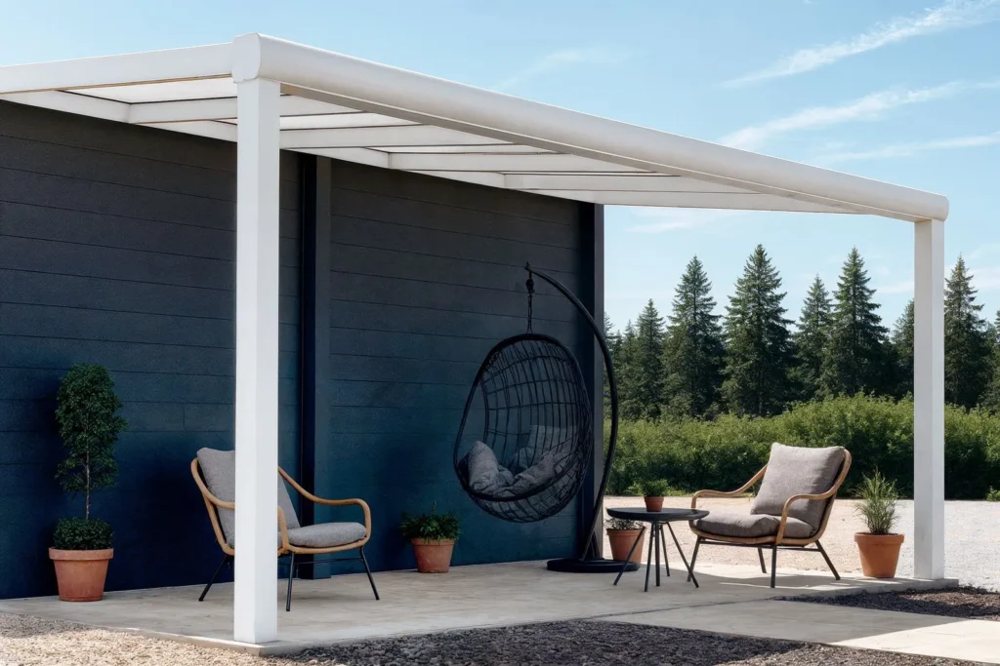

Genießen Sie jede Jahreszeit unter Ihrer eigenen Terrassenüberdachung
Hochwertige Aluminium-Terrassenüberdachungen aus eigener Produktion — von der Beratung bis zur Montage alles aus einer Hand.

Für jeden Außenbereich die passende Lösung
Terrassenüberdachungen
Genießen Sie Ihre Terrasse bei jedem Wetter und schaffen Sie einen komfortablen Wohnbereich im Freien.
Erfahren Sie mehr →Wintergärten
Ein stilvoller Anbau mit viel Glas für mehr Licht und zusätzlichen Wohnraum.
Erfahren Sie mehr →Sonnenschutz
Markisensysteme für einen komfortablen Außenbereich das ganze Jahr über.
Erfahren Sie mehr →Glasschiebewände
Elegante Erweiterung für jede Terrassenüberdachung — geschützt und lichtdurchflutet.
Erfahren Sie mehr →Pergamon
Das robusteste System im Sortiment — maximale Stabilität und Premium-Verarbeitung.
Erfahren Sie mehr →Der Weg zu Ihrer perfekten Terrassenüberdachung
Beratung & Aufmaß
Wir besuchen Sie vor Ort, beraten Sie persönlich und nehmen millimetergenaue Maße.
Individuelles Design
Maßgefertigt und harmonisch in die Architektur Ihres Hauses integriert.
Professionelle Montage
Komplette Montage durch unser Team — mit 10 Jahren Garantie auf Produkt und Montage.
Ihr Wohnraum, elegant erweitert.
Als Hersteller fertigen wir hochwertige Aluminium-Terrassenüberdachungen und Glasschiebewände in unserer eigenen Produktion. Ohne Zwischenhändler — alles aus einer Hand.
So garantieren wir höchste Qualität, perfekte Passgenauigkeit und langlebige Lösungen, die den Wert Ihres Hauses steigern.

Full-Service ohne Stress
Von der Planung über die Produktion bis zur Montage erhalten Sie alles aus einer Hand.
- 100% Professionelle Montage
- Kein Stress mit Bausätzen
- Premium-Materialien und Maßanfertigung

Mit Präzision gefertigt. Von Hausbesitzern geliebt.
Sehr zufrieden mit unserer Terrassenüberdachung von Mimu Garten. Gute Beratung, pünktliche Lieferung und professionelle Montage.
Sehr gute Erfahrung mit Mimu Garten. Unsere Terrassenüberdachung wurde schnell geliefert und sauber montiert.
Sehr zufrieden mit unserem Carport von Mimu Garten. Gute Qualität und schnelle, saubere Montage.
Die Glasschiebewände sind top. Gute Beratung, pünktliche Lieferung und professionelle Montage.
Unsere Terrassenüberdachung mit Glasschiebewänden sieht super aus. Alles wurde sauber und schnell montiert.
Alles, was Sie vor Ihrem Projekt wissen müssen
Kann ich einen Bausatz kaufen und die Terrassenüberdachung selbst montieren?
Mimu Garten ist auf hochwertige Komplettmontagen spezialisiert. Wir bieten keine Bausätze zur Selbstmontage an.
Wie lange dauert die professionelle Montage?
Die meisten maßgefertigten Terrassenüberdachungen werden innerhalb von 1 bis 2 Tagen vollständig montiert.
Werden Ihre Terrassenüberdachungen individuell für mein Haus angefertigt?
Ja, jede Terrassenüberdachung wird individuell geplant und millimetergenau gefertigt.
Benötige ich eine Baugenehmigung?
Das hängt von der Gemeinde und der Größe ab. Im Rahmen der Beratung informieren wir Sie gerne.
Ausstellungsadresse
Schipperswal 32
6041 TC Roermond
Niederlande — Neben dem Designer Outlet Center
Montag bis Samstag: 09:00 – 17:00
Sonntag: 12:00 – 17:00